Case file 03 · Ola Electric · Product concept
Trip Confidence.
Replacing a battery percentage with a verdict riders can trust before every trip.
- The problem
- The app shows a battery percentage, but riders want to know one thing: will I make it? So they do the maths in their head before every ride.
- What I designed
- A trip check that weighs distance, terrain, traffic, weather and riding style, then gives one verdict and one action: just go, ride smarter, or make one stop.
- The value
- Riders stop guessing.They charge only when it changes the trip, and the plan keeps up when the road changes.
- My role
- RoleStrategy, UX, interactionTimeline2-week conceptPlatformOla Electric appTypeProduct concept
Not affiliated with or endorsed by Ola Electric.
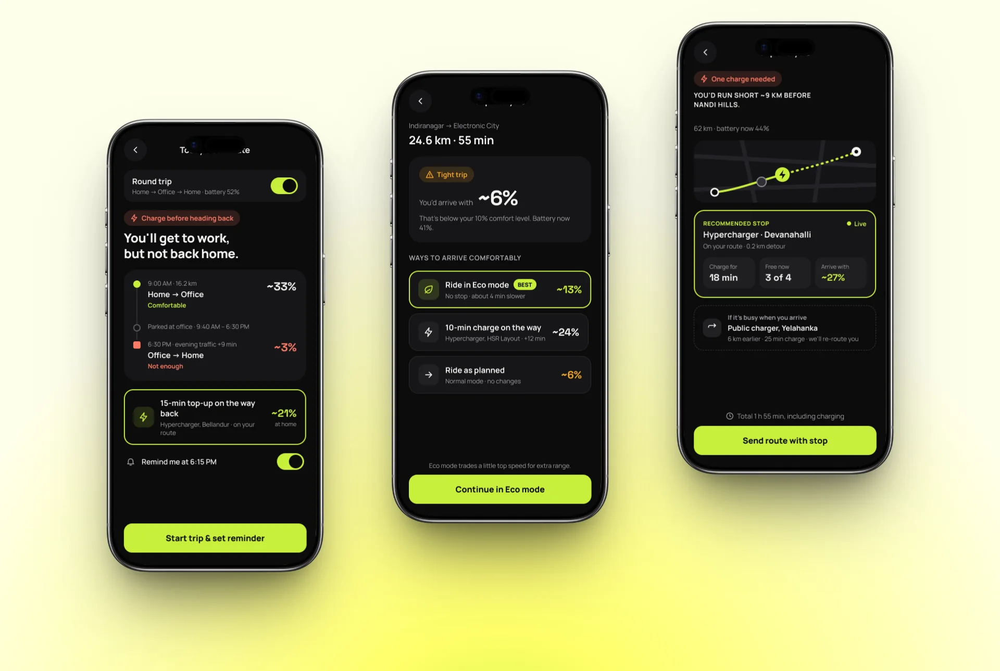
01 · The problem
One number, asked to decide a whole trip.
number to decide a trip
The battery percentage is all the rider gets.
factors it ignores
Distance, terrain, traffic, weather and riding style.
reasons when it changes
Range moves, and the app never says why.
“The same 58% gave 40 km one day and 30 km the next.” So riders stopped trusting it.
From app reviews and rider forums I went through for this concept.
- 1Check battery
- 2Do the maths
- 3Search a list of chargers
- 4Decide alone
- 5Start and hope
- 1Enter destination
- 2Trip analysis
- 3One recommendation
- 4Send to scooter
- 5Re-plans on the road
02 · Riders
Four riders, one question.
Each rider worries about range for a different reason. The same trip check had to answer all four.
Will the battery last after office hours? Should I charge before I leave?
What they get: A round-trip check before leaving home
I don’t trust the range, and I don’t know where to charge on this route.
What they get: One stop on the route, with a backup
Why does my range keep changing? The numbers confuse me.
What they get: A verdict in plain words, with the reason
Get me there fast, with as few stops as possible.
What they get: Eco mode before a stop, and live re-planning
03 · Key insight
Riders don’t need more data. They need a verdict they can verify.
They didn’t distrust the battery because it was missing information. They distrusted it because it had been wrong before and never explained itself. So every screen answers “will I make it?” first, and shows why second.
How the verdict works
It predicts the battery you’ll arrive with, compares it with your comfort level, and picks the cheapest fix.
Try it. Move the sliders the way a real trip would change.
04 · Key decisions
Three decisions that shaped the product.
Decision 1
Show a verdict, not a battery number
The first thing a rider sees is the battery they’ll arrive with, compared with their own comfort level. “You’d arrive with ~6%” means more than “41% now”.
Trade-off: Less raw battery detail up front. The working is one tap away for riders who want to check it.
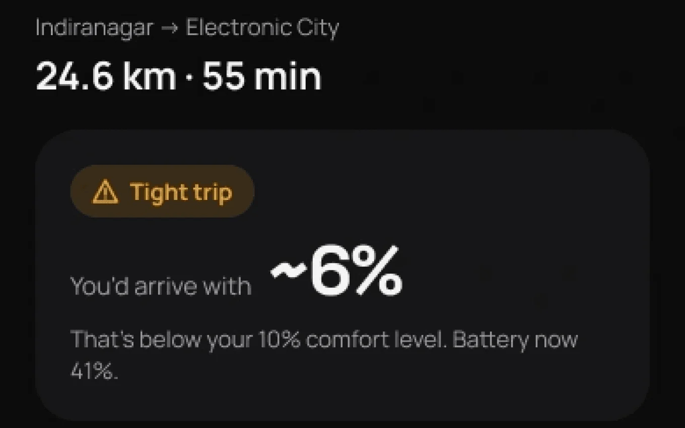
Decision 2
Plan the whole day, not just the next ride
Commuters don’t run out on the way to work. They run out on the way back. The round-trip check includes the evening leg and its traffic before the rider leaves home.
Trade-off: It needs to know about the return trip. One toggle keeps it optional for riders who don’t want it.
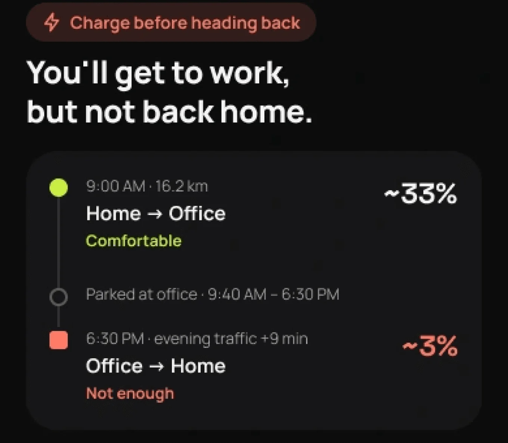
Decision 3
Suggest charging only when it changes the outcome
Eco mode comes before any stop, because it costs four minutes instead of a detour. When a stop really is needed, the rider gets one charger on their route, not a list, plus a backup if it’s busy.
Trade-off: Fewer choices on screen. The backup handles the main reason riders wanted a list: the charger being full.
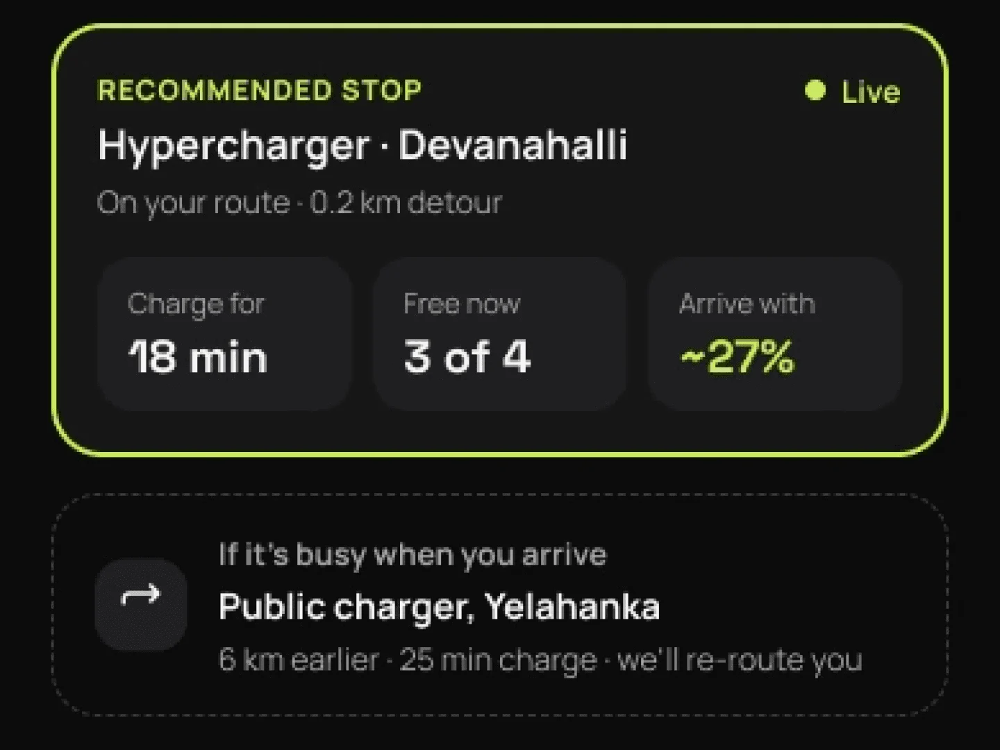
05 · First attempt
My first version still answered with data.
Before the final design I built a map-first trip screen with one layout for every trip. Riders got a verdict, but it sat under three equal numbers, a map and a charging card that showed up even when they didn’t need to charge.
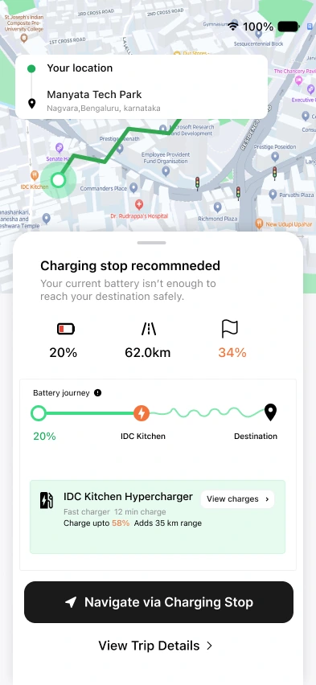
“Charging stop recommended”
- The map took half the screen and answered nothing the rider was asking.
- Three numbers, equal weight. 20%, 62 km and 34%. Which one is the answer?
- After the stop, a squiggle. No arrival battery past the charger.
- Back to doing maths. “Charge up to 58%, adds 35 km”.
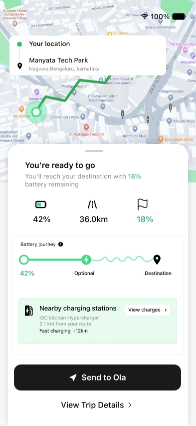
“You’re ready to go”
- Closest to right. A clear verdict in the title. This is the part I kept.
- 18% left, but is that safe? No comfort level to compare it with.
- A charging card on a trip that doesn’t need one. It undid the “ready to go”.
Lead with one verdict
not three numbers of equal weight.
Judge it against the rider
an arrival battery means nothing without a comfort level.
Stay quiet when the answer is yes
charging only appears when it changes the trip.
06 · The experience
Same question. Three different answers.
The rider searches a destination the way they already do. What comes back depends on the trip.
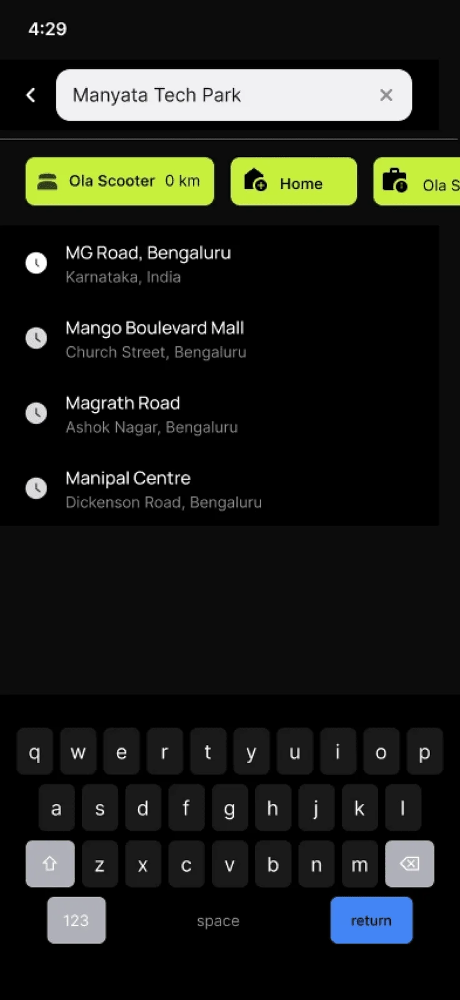
Search the way riders already do
Saved places and the scooter’s own shortcut, then one tap. What comes back depends on the trip.
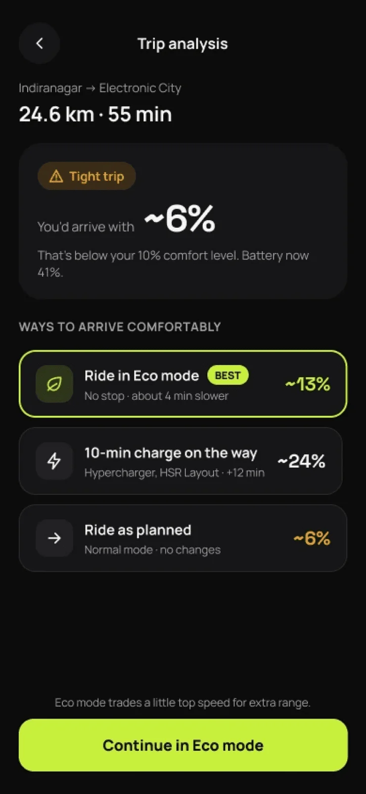
Ride smarter first
- 41% now, ~6% on arrival
- Eco mode ranked best: no stop, ~4 min slower
- A 10-minute charge is the second option
- “Ride as planned” is still allowed
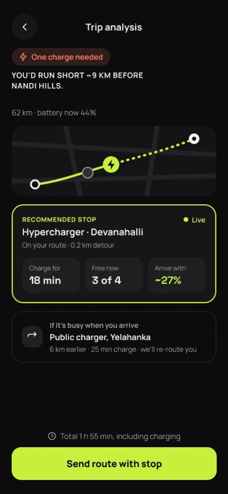
One stop, not a list
- You’d run short ~9 km before Nandi Hills
- One charger on the route, 0.2 km detour
- Charge time, free bays and arrival battery
- A backup that re-routes you if it’s busy
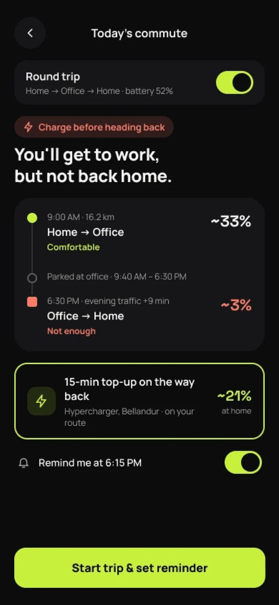
Enough to get there, not back
- Flagged before leaving home
- Each leg shows its own arrival battery
- Evening traffic is counted in
- A 15-minute top-up on the way back, with a reminder
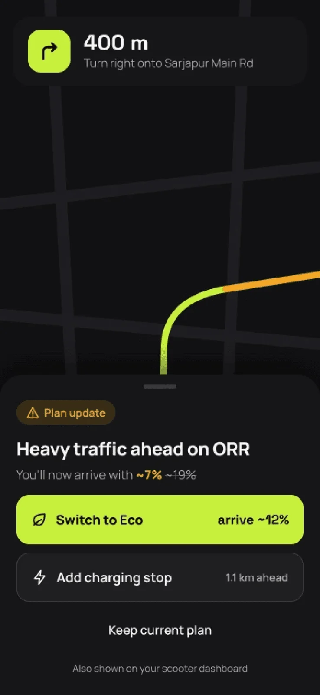
On the road
The plan keeps up.
A plan made at home goes stale the moment traffic changes. When it does, the rider gets a short update over the map instead of a silent drop in range.
07 · Impact
What it changes for riders, and for Ola.
Why it matters to the business
Range anxiety is one of the biggest reasons people hesitate to own an EV. A rider who trusts the scooter rides it more, uses Ola’s charging network on purpose and is easier to keep.
| Hypothesis | What I’d measure |
|---|---|
| Riders trust the verdict | Share of trips started right after a trip check |
| One stop beats a list | Recommended-stop acceptance vs. manual charger searches |
| Less range anxiety | Range-related support tickets and reviews |
| More daily use | Rides per week for riders using the trip check |
These are hypotheses, not measured results, so I’d track them like this.
08 · Reflections
What I’d keep from this one.
When the answer is yes, stay quiet
The best version of a comfortable trip is one line and a button. Charging advice only shows up when it changes something.
Trust comes from showing the working
A doubted number became believable once riders could see where it came from.
Offer the cheapest fix first
Eco mode before a detour, one stop before a list. The order of options is a design decision.